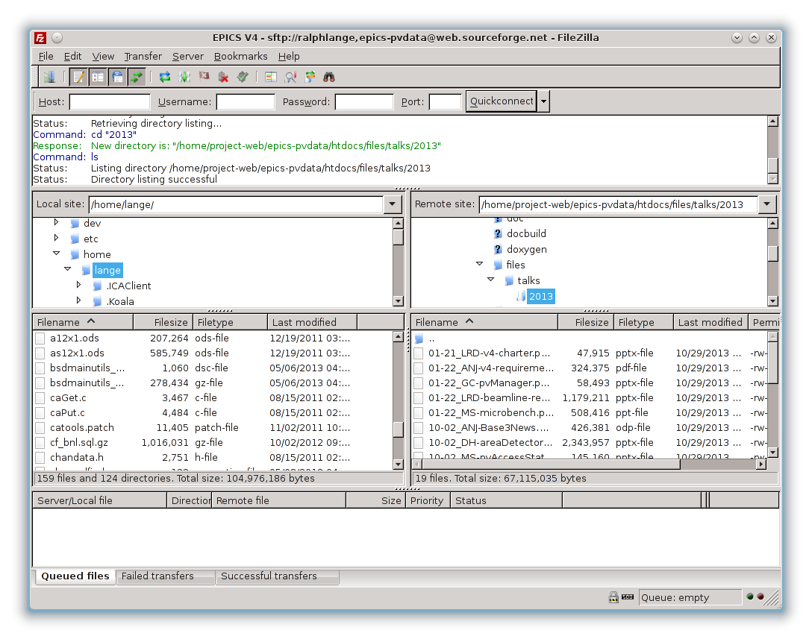

Explanation and instructions for the EPICS V4 project webspace on the SourceForge servers.
The EPICS V4 project webspace contains the EPICS V4 website.
Most of the manually created website content is kept in the repository pvDataWWW. The repository content is checked out and pushed to the SourceForge servers (using rsync over ssh) by a Jenkins CI job on CloudBees.
Binary content that is not expected to change (meeting slides, images) is kept in the same directory structure within the webspace, but is not part of the content repository. Such content has to be uploaded manually.
Automatically created content (Doxygen documentation, Javadoc) is pushed to the SourceForge servers (using rsync over ssh) by each software module's Jenkins CI job on CloudBees.
Some server-side applications and their data are also located within the project webspace, but outside of the website tree.
When using the SourceForge Shell Service, the webspace is mounted as
/home/project-web/epics-pvdata.
It contains:
cgi-bin/ |
Server-side scripts, e.g., hgweb |
python/ |
Installation of mercurial and extensions, needed by hgweb |
python2.6/ |
|
repos/ |
Repository instances used by hgweb |
htdocs/ |
EPICS V4 website |
files/ |
Content not kept in the pvDataWWW repository |
docbuild/ |
Automatically created software documentation |
.../ |
Most of the remaining files and directories are content from the pvDataWWW repository, plus some old stuff that needs to be cleaned up |
... |
hg clone
ssh://<username>@hg.code.sf.net/p/epics-pvdata/pvDataWWW
hg push
The Jenkins CI job on CloudBees will pick up your changes and publish them within a few minutes.
You can use any of the tools supported by SourceForge (rsync, scp, sftp) to access the webspace and upload your files.
When connecting to
<username>,epics-pvdata@web.sourceforge.net, the home
directory will be the root directory of the webspace, so that you have full
access to the complete structure shown above.
Please keep manually uploaded files within the htdocs/files
directory, to avoid them being overwritten by the publishing Jenkins jobs.
Please don't upload random files to that directory, consider creating a
sensible subdirectory tree (e.g., htdocs/files/talks/<year>/
for group presentations).
Here is a commandline example using sftp:
> sftp <username>,epics-pvdata@web.sourceforge.net Connected to web.sourceforge.net. sftp> cd htdocs/files sftp> pwd Remote working directory: /home/project-web/epics-pvdata/htdocs/files sftp> ls talks sftp>
Personally, I prefer using a GUI (e.g., FileZilla or FireFTP) that makes things like selectively transferring files very easy and - at least in my experience - less error prone.
